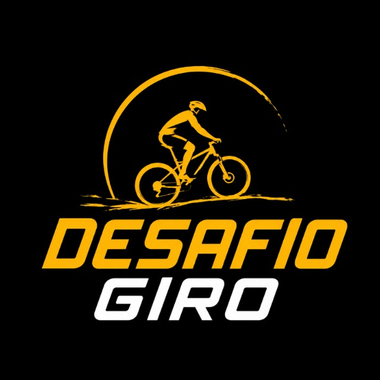

Escolha seu desafio
Consulte a opção disponível, a meta, o período e as condições antes de participar.
Desafio Giro
Um desafio para quem encontra no ciclismo um caminho de evolução, superação e continuidade. Entenda como funciona, escolha sua meta e participe com segurança.
Informações claras, regras acessíveis e acompanhamento do participante em um só ecossistema.

Paixão por pedalarComo funciona
Você escolhe o desafio disponível, acompanha as regras e realiza sua meta dentro do período definido. O Portal Giro reúne as informações para que você saiba o que fazer em cada etapa.
Consulte a opção disponível, a meta, o período e as condições antes de participar.
Acesse o sistema oficial, confira seus dados e conclua a inscrição para o desafio escolhido.
Durante o período do desafio, acompanhe sua evolução e as orientações relacionadas à sua participação.
Ao cumprir as condições do desafio, siga as orientações de conclusão e mantenha o registro da sua conquista.